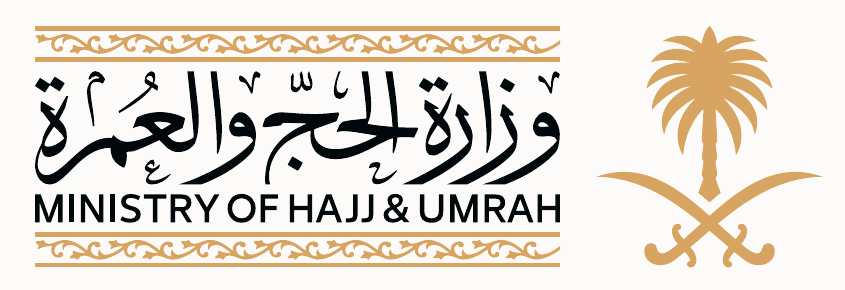

مؤشر المحفظة
وضع المتطلبات
122متطلباً

المشهد التنفيذي · موسم العمرة 1448هـ
منصة متابعة موحّدة تربط المتطلبات الرقمية والمبادرات بالإنجازات والمراسلات والإجراء التالي—مع تتبع زمني قابل للرجوع.
مؤشر المحفظة
نبض التنفيذ
رادار القيادة
محفظة الخدمات
إنجاز الأسبوع
سجل المتطلبات
لا يُعد النشاط إنجازاً نهائياً إلا بوجود مخرج قابل للإثبات. الرقم 122 هو إجمالي معلن، وتبقى 48 إضافة تحت المطابقة حتى إدراجها بنداً بنداً.